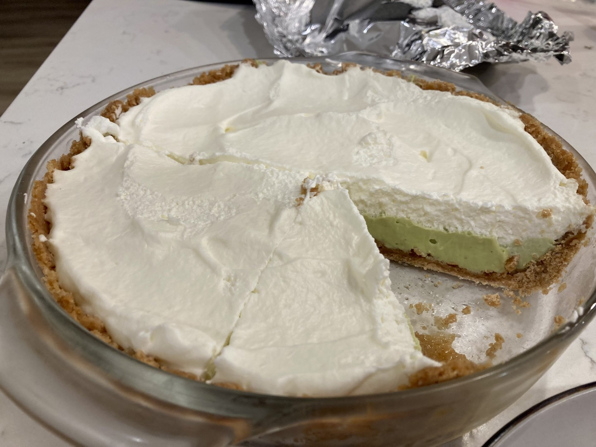

Pie 51: Avocado
2024-06-23FIlling recipe from California Avocado.
Crust recipe from Sally's Baking Addiction.
Taste:
Difficulty:
Vibes:
Suggested pairing: Domino’s pizza and family
Imagine, if you will, a ripe avocado sitting on the counter. Purchased on sale with no specific recipe in mind, its owners intend to leave the next day for a family vacation. If left behind, the avocado will surely spoil before they return. Only two options exist: guacamole and pie. Dear reader, I invite you to guess which we chose.
Katie Beth’s family had invited us to meet them at a rental house in Branson and visit Silver Dollar City—it was all very exciting. But if we wanted to bake our avocado pie at home in Columbia and have it still be green when we ate it two days later and 200 miles south, we’d have to take measures to prevent the nasty brown reaction that plagues many fresh avocado dishes.
We found a recipe that included plenty of lemon juice to lower the pH, covered the avocado filling with whipped cream (not called for by the recipe) to keep the oxygen away, and kept it as cold as possible while we traveled. All three of these things reduced the reaction rate of polyphenol oxidase, the enzyme that turns phenols (small organic acids) into catechol melanin (polymer pigment)1.
Katie Beth’s whole family loves graham cracker pie crusts, so that was an obvious choice. It also keeps better in my opinion, as the crust soaks up less moisture. The recipe we ended up using was simple. Blend the butter, sugar and graham crackers to make the crust. Press into pie dish. Bake.
Blend the avocado with the other filling ingredients. Pour filling into pie crust. Refrigerate, then top with homemade whipped cream. Easy as…you know.
We drove down to Branson, MO, the next day. After a wonderful time with her family, we ordered Domino’s and enjoyed two delicious “pies” in one meal!
1One of very few relevant studies reported that the enzyme activity of crude avocado polyphenol oxidase is highest at pH 7.5–7.6. By contrast, a lemon-heavy icebox pie such as this one likely has a pH of 3–4, far below the enzyme’s optimal range.
Also, to be clea: acidulation, covering, and refrigeration are general methods of reducing enzyme reaction rates, not ones specific to this context.